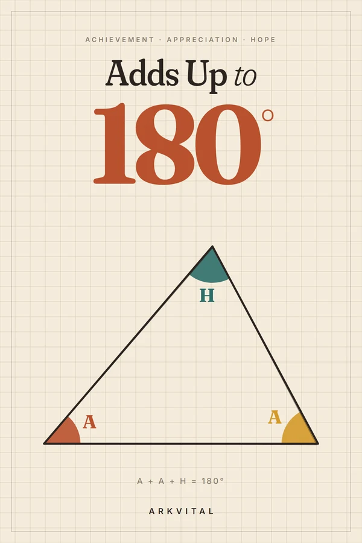

PAŠPALĪDZĪBA · PATEICĪBA · CERĪBA
Adds Up to 180
Sasniegums, atzinība, cerība — un lielais, skaļais “AAH”, kas tos satur kopā
Katra trijstūra leņķu summa ir 180 grādi — tāpat kā dzīvei, kas darbojas. Pieci parasti cilvēki mācās kalpot tiem, kas viņiem tīk, katru dienu pateikt paldies un turpināt iet. Grāmata beidzas ar desmit minūšu ikdienas rutīnu un vienu lielu izelpu.